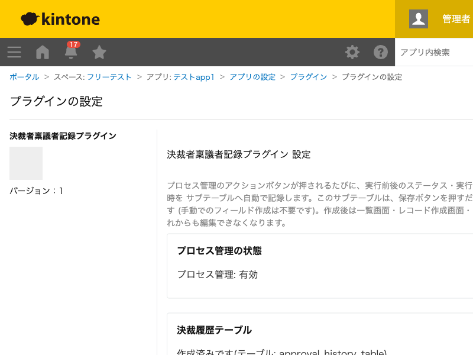

GovAppsプラグイン 安全性を確認できる無料kintoneプラグイン集
プロセス管理のアクションボタンが押されるたびに、実行前後のステータス・実行ユーザー・役職・実行日時を サブテーブルへ1行自動追記するプラグインです。サブテーブルはプラグイン設定画面の保存だけで自動作成され、 一覧画面のインライン編集・レコード作成画面・レコード編集画面のいずれからも手入力できなくなります。 公文書を外部に保存する際、kintone標準の「更新履歴」では残らない決裁の経緯(誰が・どの役職で・ どのステータスからどのステータスへ・いつ決裁したか)を、レコードそのものの一部として保持できます。
プロセス管理で承認・決裁を運用しているアプリで、誰がどの役職でいつどのステータスへ進めたかをサブテーブルとして記録します。PDF等で外部へ保存する際も、この記録がレコードの一部として一緒に残ります。
kintone標準の更新履歴はレコードの操作ログですが、本プラグインは決裁時点の実行ユーザーの役職まで含めてサブテーブルの行として記録するため、レコードのフィールド値としてそのまま一覧・印刷・API取得に使えます。
approval_history_table)が自動的に作成されます。既に作成済みの場合は再作成されません(冪等)。サブテーブルの内包フィールドは、一覧画面のインライン編集・レコード作成画面・レコード編集画面のいずれからも手入力できません。行の追記は、プロセス管理のアクション実行時にプラグインが自動で行います。
kintoneセキュアコーディングガイドラインに沿って実装時にチェックしています。特に重要な点は次のとおりです。
kintone.api()(kintone自身への呼び出し専用の内部ラッパー)のみを使用しています。外部サーバーへの通信は一切行わず、外部ライブラリも使用していません。詳細な確認項目・確認日は下記GitHubのチェックリストに全項目を掲載しています。

設定画面を開くたびにプロセス管理の状態確認(GET /k/v1/preview/app/status.json)を1回実行します。
保存時にサブテーブルが未作成の場合のみ、フィールド追加(POST /k/v1/preview/app/form/fields.json)・
デプロイ実行(POST /k/v1/preview/app/deploy.json)・デプロイ完了確認(GET /k/v1/preview/app/deploy.json、
完了までポーリング)を実行します(既に作成済みの場合はこれらのAPIは実行されません)。
レコード画面側は、プロセス管理のアクション実行のたびにkintone.getLoginUser()と
kintone.user.getOrganizations()(いずれもREST APIを介さないJavaScript API)を実行します。